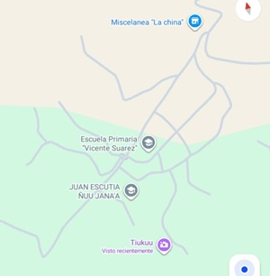

|
|
| PRINCIPALHISTORIA CURIOSIDADESUBICACIOCONTACTO | UBICACION 
La comunidad de Juan Escutia es una localidad rural perteneciente al municipio de la Heroica Ciudad de Tlaxiaco, en la región Mixteca de Oaxaca. El cual se encuentra ubicada al suroeste de la cabecera municipal de Tlaxiaco, en la zona conocida como Cuquila (frecuentemente referida como Juan Escutia Cuquila). Está aaproximadamente 22 km de distancia del centro de Tlaxiaco. En automóvil, el trayecto toma alrededor de 38 minutos conduciendo por la carretera federal rumbo a Putla (México 125). Es una pequeña comunidad, esta a una altitud de 2,269 metros sobre el nivel del mar. |
| |
|---|